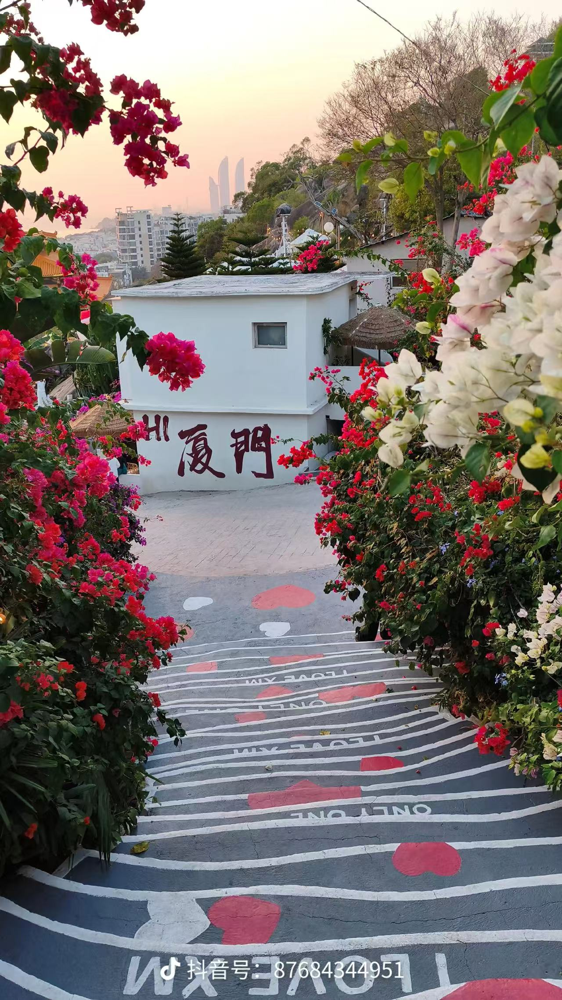

1.png · 土樓景色參考
土樓建築及周邊田野
使用边界：不可認定某座土樓已包含門票或已排入行程
Rujing2 · 厦门公司资料 · 2026-10-30 · 转私讯接待与演练记录
35 条 FAQ 和 8 个素材继续使用。AI 简短回答已知问题；完整路线、资质、合同、收款等请专人说明，先邀请留资。不要求先收齐日期、人数、房型，不把资料缺失本身当作立即交接。明确要求真人仍直接交接。
2026-10-30 更新：服务器演练已开放。打开服务器 AI 演练场 → 用原管理员账号登录 → 点击「廈門／廈漳泉3–6天諮詢」→ 直接输入客户问题。账号密码不写入本报告。
服务器现已更新为转私讯版本，公网真实模型通过 6 类验证：参考报价、公司资质、完整线路、收到 LINE ID 交接、只同意加好友时继续索要 ID，以及连续补日期／偏好／孩子年龄。具体措辞由模型生成。对真实客户的自动发送保持关闭。下方另保留 10 月 29 日的 41 类旧演练作为历史对照。
本机演练入口继续保留，仅在运行服务的电脑上可用。
客户补充日期、亲子需求或“不要全是风景”时，记录新增需求，不每轮追问人数或重复“加完马上发完整报价”。客户只说“可以加”不算成功留资；普通照片不算二维码；明确的联系二维码交人工核验，不声称已扫描或已加上。
沉默追访：台北时间次日 10:00 起，每天最多一次，距最后客户消息最多 7 天。8 个素材分别配置追访规则，按兴趣挑选，每次最多一图或一视频加短文；素材不重复，无合适新内容可等待。已留资、人工接管、明确拒联或到期停止。客户拒绝加好友仍可在 Facebook 答疑，不天天催留资。正式发送开关继续关闭，真实渠道发送另行联调。
本轮真实模型验证包含报价转私讯、资质、付款、证件、ID、二维码、普通图片、明确找真人、拒加好友、连续问答、案例中的目的地更正与亲子需求，以及七天时钟。首次追访素材调用失败已修复并复测，原始记录保留。下方旧演练是历史对照，付款／证件等“立即交接”的旧行为已被本节新规则替代。
内部交接：客戶已提供LINE ID，轉交規劃師私訊承接廈門3–6天行程與價格細節。AI 已停止答复与追访。
内部交接：客戶明確表示所傳圖片為LINE QR Code並要求加好友，需人工核驗圖片後加好友，AI不猜測圖片內容。。AI 已停止答复与追访。
| 配置范围 | 本次采用的内容 | 对回复的影响 |
|---|---|---|
| 本公司／线路 | 台币；3–6 天产品范围；推荐 5 天厦漳泉；每人 NT$5,000–8,500 参考范围 | 直接回答一般询价；未提供具体团期、房型和人数价表，不计算最终总价。 |
| 本公司／服务 | 文档中的五星住宿、无购物、团费包含项目、机票不含、可协助订票、12 岁以下儿童优惠、8–12 人小团、素食安排等 | 按当前公司 FAQ 回答；酒店名称、儿童优惠金额等没有的数据不补写。 |
| 本公司／接待 | 先简短答疑，再自然邀请 LINE／微信 ID 或二维码；详细方案由专人一对一讲解；客户只想留在 Facebook 也继续聊 | 不强迫加好友，不因 8 人咨询触发旧公司的人数交接，不发送申请款催款或未确认优惠。 |
| 平台通用 | 按问题选资料和素材、币种核验、消息去重、真正转人工、演练与对客发送隔离 | 这些能力复用；旧公司的路线、价格、品牌、证件时限和跟进话术不带入。 |
厦门资料存为本公司独立资料包；空白新公司底座仍保持可复用。之后更换公司，应更换公司资料和规则，不能把这份厦门 FAQ 当作所有公司的统一答案。
问酒店就答住宿并附房间图；问餐食视频就发对应视频；问价格先答台币参考范围。每次按当前问题选择，不把 8 个素材一次全部发出去。客户需要核实的问题转人工后，AI 停止继续接待。
土樓建築及周邊田野
使用边界：不可認定某座土樓已包含門票或已排入行程
鼓浪嶼文字與建築
使用边界：不可推定船票、景點順序及自由活動時間
雙人床客房照片
使用边界：酒店名、房型、實際入住及海景均未確認
多種閩南小吃拼圖
使用边界：不代表拼圖中所有小吃都包含

花卉、階梯及廈門字樣，帶抖音水印
使用边界：不是無障礙路線證明，不去除來源水印
雙子塔方向的城市景色，帶抖音水印
使用边界：不代表房間視野或已確認行程
桌上餐食及海鮮；音軌尚未逐字核驗
使用边界：不保證每天海鮮、同樣菜色或任意餐標
旅客合影活動，含人物和品牌字幕；音軌尚未逐字核驗
使用边界：不作公司資質、團員組成、訂單或付款證據
微信截图里的 4 段营销话术也已复核：住宿餐食介绍保留有依据的内容；未提供优惠金额的「加好友享优惠」、未确认订单的「未收到申请款」和用旅客视频证明不会受骗的说法不自动发送。视频只用于餐食／旅游氛围展示。
1–4 图分辨率较低，5–6 图带水印，7.mp4 含人物与字幕；可以先看内部回复效果。素材音轨尚未逐字核验，正式对客前再确认素材归属、文字与承诺。现有素材均标记仅供演练。
下面按实际消息展示，省略每段重复的欢迎语。转人工场景是实际交接动作；不会把内部说明伪装成已发送给客户的回复。
以下为 2026-10-29 原 FAQ 整理及旧演练对照；最新转私讯规则和实际效果见上方。原文和历史失败保留用于追溯。
「采用口径」是知识内容，不是每次一字不差照发的固定话术。标注转人工的 6 项，其说明供顾问核对；当前配置直接产生交接动作。
原文：一個人差不多5000-8500左右台幣就可以玩3-6天哦~/ （2）具體看您玩幾天，玩的天數不同價格不一樣呢
采用口径：一般3–6天行程，每人參考約NT$5,000–8,500，依天數和安排不同。您想玩幾天呢？
整理说明：可回答參考範圍；不是指定日期、房型和人數的最終價，不換匯、不把下限當成交價。
原文：不管什麼時候來都非常合適哦~廈門一年四季如春，不同季節不同風景，您現在有時間就可以安排上呀~
采用口径：可以依您方便的月份規劃廈門行程，不同季節有不同景色。您大約想幾月份來呢？
整理说明：保留可諮詢月份，不把四季如春當天氣或全年有位保證。
原文：我們行程非常豐富哦~路線多種選擇，如果您時間充裕的話比較推薦您走5天行程，廈漳泉三個城市著名景點都可以玩得到呢
采用口径：如果時間充裕，會推薦5天，能安排廈門、漳州和泉州三個城市的著名景點。您大約有幾天假期呢？
整理说明：只有城市和推薦天數，沒有逐日順序。
原文：我們這邊有3-6天的行程安排喔，時間充裕的話廈漳泉都是有玩到的喔～/您計劃幾月份出行呢 大概幾位呀
采用口径：我們有3–6天的行程可以選，時間充裕可安排廈門、漳州、泉州。您目前比較想玩幾天呢？
整理说明：不能編造D1–D5或把展示照片當確定包含景點。
原文：您放心，我們費用都是公開透明的~不會有任何隱形消費/（2）沒有哦~您放心 我們是品質團，一切以您的感受為主
采用口径：我們的行程沒有安排購物站，費用包含和需要另外支付的項目會在確認行程時列清楚。
整理说明：保留無購物口徑；機票不含，不把公開透明改寫成所有項目都免費。
原文：包含了五星級住宿+景點門票+餐食+全程用車+導遊服務+司機服務！價格超劃算～
采用口径：團費包含五星級住宿、行程內景點門票、餐食、全程用車、導遊及司機服務；機票不包含。具體酒店、餐次和景點以確認的行程為準。
整理说明：沿用本公司FAQ；不推定每餐海鮮或任意景點門票都含。
原文：不包含哦~您是從哪個機場出發呢？我們可以幫您查詢代訂
采用口径：機票不包含在團費內，可以協助查詢和代訂。您打算從哪個機場出發呢？
整理说明：未提供即時票價、代訂費及退款政策，不自行核價或下單。
原文：我們安排的都是五星級酒店哦~安全舒適
采用口径：住宿按五星級酒店安排，具體酒店和房型會依出發日期確認，也可以先看房間參考圖。
整理说明：保留公司提供的五星口徑；房圖沒有酒店名稱，不能認作承諾房型或保證海景。普通問酒店不用主動列出所有不保證事項。
原文：可以呀~我們會根據您的人數安排適合您的車型哦~
采用口径：可以包車，會依同行人數安排合適車型。請問大約幾位、想安排幾天呢？
整理说明：車型、座位、價格未提供，不指定車款。
原文：請問一下小朋友幾歲呀？我們12歲以下的小朋友可以享受優惠價哦~
采用口径：12歲以下的小朋友可以享有優惠價，實際費用還要看年齡和行程安排。小朋友幾歲呢？
整理说明：沒有兒童折扣金額，不按成人價乘比例。
原文：您放心，我們都是車接車送，行程非常輕鬆 不卡時間~您放心玩
采用口径：行程有車接車送，也可以先了解長輩的體力與步行需求，再確認合適安排。長輩是否有不方便走路或需要避免的活動呢？
整理说明：有接送不等於所有景點無階梯或任何長者都不累。
原文：您是哪方面不适呢？我們導遊會特別關照你的 需要輪椅，我們也可以幫您安排
采用口径：可以先協助了解輪椅及行動協助需求，具體安排需依日期和服務方確認。您主要需要哪一方面協助呢？
整理说明：提供協助意向；不保證全程無障礙或免票。
原文：我们以行程为主哦~您可以参考了解一下我们的行程，合适的话我们可以帮您规划出行及订票
采用口径：我們以行程服務為主，行程合適的話可以協助規劃出行及訂票。您是只需要訂票，還是也想了解行程呢？
整理说明：不能保證獨立訂票服務已接受。
原文：可以呀~我们可以协助您预定车型或者酒店
采用口径：自由行也可以協助預訂用車或酒店，您希望我們幫忙哪一部分呢？
整理说明：實際供應和費用另確認。
原文：有的呀~您计划去哪里玩呢 我们会根据您的时间来安排哦~
采用口径：也可以安排一日遊，會依您的時間和想去的地方規劃。您想去哪裡玩呢？
整理说明：尚無一日遊明細價目，不套3–6天參考價。
原文：因为FB是临时窗口，会有时间限制的，麻烦您给我個您的QR 方便添加您，安排規劃師詳細給您介紹一下行程路線
采用口径：沒關係，我們可以先在這裡聊行程，您不用另外註冊LINE或微信。您想先了解哪一部分呢？
整理说明：原文在沒有通訊軟體時仍要求QR，改為尊重聯絡偏好。
原文：可以呀~我們可以定制哦~根據您的需求來規劃適合您的行程
采用口径：可以依您的需求定制行程，不一定要跟團。您想安排幾天、大約幾位同行呢？
整理说明：定制價格、成團條件需另核實。
原文：我們一個團人數不多 8-12位，都是咱們台灣同胞遊客哦~
采用口径：一般安排8–12位的小團，以台灣旅客為主要服務對象。
整理说明：8–12是本公司團規模，不套用舊公司7人轉人工或獨團加價；不是某日已成團的保證。
原文：您可以多邀約個家人朋友一起出遊呀~我們這邊也可以幫您協調哦
采用口径：單房差的確切金額目前還需要依日期及房型核對，這題請顧問確認。
整理说明：原文沒有單房差金額；不以找朋友同行迴避，也不計算。
原文：我這邊是FB的客服哈，平台會有限制，很多內容發不了哦，旅遊管家會給您出適合您的行程規劃，然後順便把景點餐食還有入住酒店的視頻照片一起傳送給您，這樣您了解的會更加的清晰明了~
采用口径：可以先在Facebook這裡了解行程，也可以看我們現有的圖片資料。您方便時再選擇合適的聯絡方式，不用現在加LINE或微信。
整理说明：不聲稱FB不能發照片，不以換平台作回答前提。
原文：可以呀~我們會安排專人協助您哦~
采用口径：您說的辦卡是手機SIM卡、銀行卡，還是其他卡片呢？不同服務要分開確認。
整理说明：卡片類型不明，先澄清，不保證均可代辦。
原文：行程合適的話可以提前預定哦~可以享受優惠價 您這邊是用賴還是微信比較多，可以給我個您的QR嗎 方便添加您安排規劃師詳細給您介紹一下
采用口径：付款方式、收款帳戶及訂金規則需要顧問提供正式資訊後確認。
整理说明：原文沒有付款答案；不虛構台灣帳號、不使用催申請款話術。
原文：其他城市也可以安排呀~您是想去哪個城市呢？
采用口径：其他城市也可以協助了解安排，您想去哪個城市呢？具體行程再請規劃師確認。
整理说明：可詢問目的地，不假造其他城市現成產品。
原文：可以安排素食哦~不吃牛肉也可以安排 您有什麼忌口的都可以跟我們說 我們會另外安排的
采用口径：可以安排素食，也可以提前告知不吃牛肉等忌口，方便用餐時協調。您有哪些需要避開的食材呢？
整理说明：不自行保證過敏原完全隔離或任何特殊餐都可供應。
原文：我們是大陸旅行社哦~ 很多台灣旅行社都是找我們對接的 您可以放心 稍後我們規劃師會把我們公司的營業執照跟資質傳給您
采用口径：我們是大陸旅行社，可以請規劃師提供公司的營業執照與資質供您核對。
整理说明：尚無公司名稱及合作證明，不宣稱特定台灣旅行社合作。
原文：你看來得及出行辦理一下不，或者到時候直接落地簽也是可以的 現在都非常方便哦
采用口径：證件是否能用、是否需要先換證，需要依您的身份和出發安排核對，請顧問協助確認官方要求。
整理说明：不沿用直接落地簽即可的未核實結論。
原文：過來大陸需要身份證，護照 台胞證 缺一不可哦~
采用口径：入境證件要求會因身份而不同，只有護照是否足夠，需要先確認您的身份與有效證件。
整理说明：不沿用身份證、護照、台胞證缺一不可的概括說法。
原文：可以呀~到時候給您安排女導遊哦~
采用口径：可以提出女導遊的偏好，我們再依您的出發日期協調確認。
整理说明：可提出偏好不等於未查排班就保證安排。
原文： 那您可以提前幾天過來呀~散散心 在安排醫院哦~
采用口径：洗腎接收和時間需要醫療機構確認，我們不能先保證安排；這項需求會請顧問協助核對。
整理说明：不給醫療建議，不承諾提前到廈門即可安排醫院。
原文：可以呀~非常歡迎哦~請問可以給我個您的賴或者微信嗎
采用口径：可以一起了解我們的行程，您們在廈門匯合後的集合和接送安排，再依到達時間確認。您們大約何時抵達呢？
整理说明：不因身份不同拒答，也不直接索要聯絡方式。
原文：來廈門本來就不貴哦~而且現在有補貼 非常適合您跟家人朋友一起過來玩
采用口径：可以先核對行程包含項目和公司資質，再決定是否預訂。參考費用會依天數與安排不同，具體明細可以請規劃師確認。
整理说明：未提供補貼依據，不以補貼或合影證明付款安全。
原文：沒關係哦~那您可以先參考了解一下我們的行程路線，這樣方便您做出行規劃，也可以分享給您家人朋友方便溝通
采用口径：沒關係，可以先了解3–6天的方向，等您和家人討論後再決定日期與人數。您想先看住宿還是行程介紹呢？
整理说明：不要再次追問已表示未定的時間人數。
原文：沒關係哦~那您可以先參考了解一下我們的行程路線 有假期方便隨時聯繫 廈門很期待您哦
采用口径：沒關係，您可以先參考，有合適的假期再來聊就好。
整理说明：本輪簡短收尾，不自行安排沉默追訪。
原文：需要有本國的簽證才可以哦
采用口径：不同國籍及證件的入境要求不同，需要確認國籍、現有證件與出發時間後，再核對是否適用。
整理说明：不沿用需有本國簽證的錯誤概括。
原文：不用哦~您只要定到機票就可以啦 我們行程一切都會提前幫您安排好的
采用口径：節假日也可以先詢問安排，價格、酒店和名額需要按具體日期確認，不能只憑機票已訂就保證成行。您預計哪幾天呢？
整理说明：未有日期價目及庫存，不承諾訂到機票即可安排。
不需要再写 FAQ。单房差、付款、证件及医疗等未核实问题，AI 说明需专人确认并邀请留资，收到联系方式后交接。客户明确要求真人仍直接交接。完整行程、公司资质及付款合同由人工私聊提供；未提供的内容 AI 不编造。
希望 AI 进一步准确报团期价、确认预订时，再补具体天数／日期价表、儿童和单房差金额、逐日行程、实际酒店和剩余名额、付款退改规则。公司正式名称、资质证明及联系方式补齐后可替换现有通用称呼。以上缺口都不阻止继续调试已知问题的回复效果。
包含原文档全部 35 题及 6 类扩展验证：酒店图片、餐食视频、8 人咨询、拒绝加好友后继续问价、日期追问、行程概览。分批运行并修正后复测，以下每类保留最新一次结果，不是一次运行的全量通过声明。
自动检查覆盖动作是否一致、指定素材是否发送及旧业务内容误入；随后核对实际回复。它不等于对所有可能问法或业务正确性的全面保证。早期失败记录保留在本机 results.jsonl，便于追溯。
FAQ 来源：新建 DOC 文档.doc；SHA-256：8ce41bed741f6c6da2359ca22f70545a67b23876012637edc240d711e85679e1。报告不包含账号密码、模型密钥或真实客户消息。